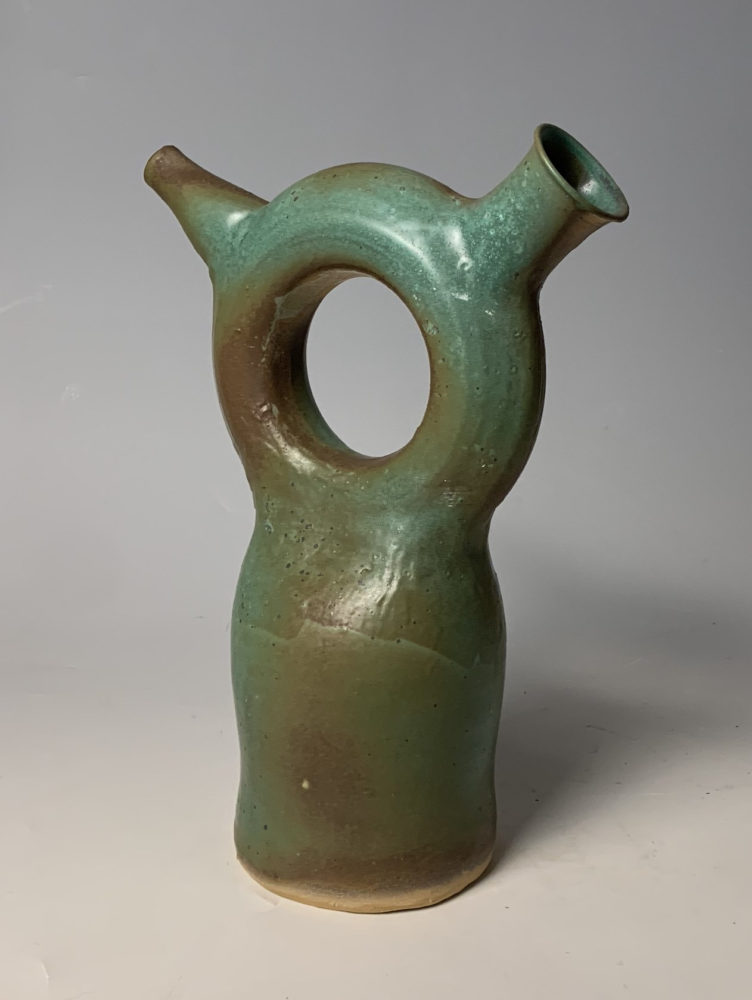
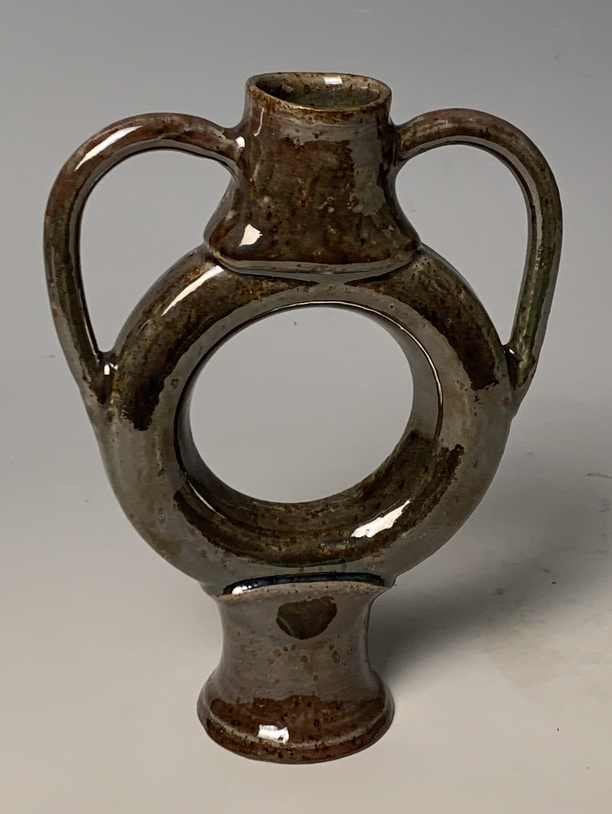
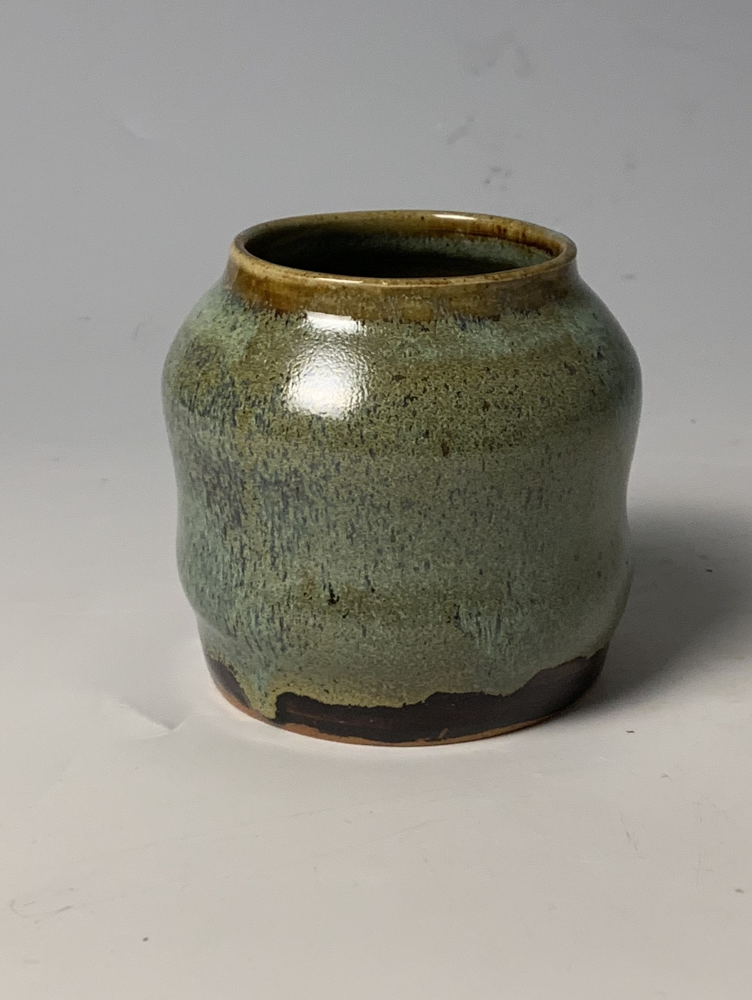
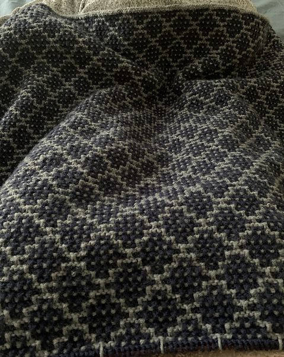

I am an Information Science major at Michigan State University with an extensive humanities background. Thankfully my passion for working with my hands has translated to the digital world. In the physical realm, I like to create various forms on the potter's wheel and design knitting or crochet patterns. Digitally, I have learned python, HTML, CAD, and Adobe Suite.
Being a designer in the real world has allowed me to learn a certain type of developmental thinking that combines aesthetic and functionalilty in whatever project I apply myself to.
Creative Endeavors
These are some of my creative projects that I have pursued in my free time.
Like an Onion

A vase named "Like an Onion." The top of the vase vaguely resembles Shrek's head silhouette. I like this one the most because it was the first time I was able to throw a torus shape successfully (the donut shape). It's a very complex shape because it has two walls that need to be joined together and carfully trimmed to get two even sides.
Trophy Vase

A vase that resembles a trophy
Little Vase

A small vase that ended up being my first "traditional" vase. This one is pretty interesting because quite a bit of it's shape comes from me dropping it on the table to finish off the foot of the vessel during the 'trimming' process. The bottom was too thin to create a nice foot for the piece.
Mosiac Blanket

This blanket is near and dear to my heart becuase it took 5 years to complete and represents a significant portion of my young adult life. Many thoughts, emotions, and worries are woven into each stitch as I used it to navigate through that period of my life. The final blanket is large enough to cover a twin XL mattress. I still have the pattern memorized and it's been two years since I cast off that project.